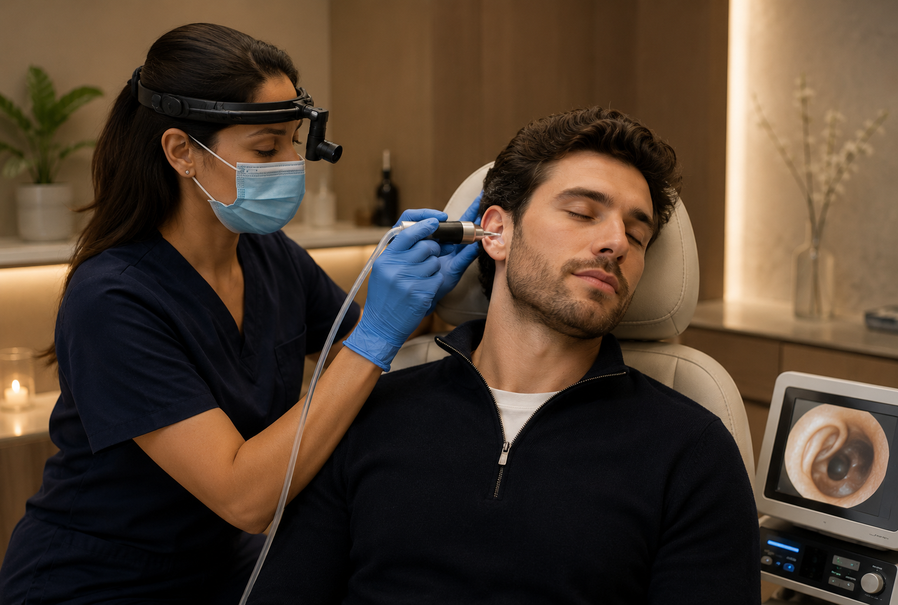

Service 01
Ear Irrigation
Gentle ear irrigation designed to safely flush excess wax and improve ear comfort.
Book Irrigation
Our ear care treatments are designed to safely remove excess wax and improve ear comfort using professional techniques.
Choose a clinic appointment or ask about home visit availability for selected ear care services.
Book Your Appointment
Treatment Options
Service 01
Gentle ear irrigation designed to safely flush excess wax and improve ear comfort.
Book IrrigationService 02
Precise ear wax removal using modern micro-suction techniques performed by an experienced practitioner.
Book Micro-suctionHome Visit Option
Prefer treatment in the comfort of your own home? Home visit appointments are available for selected ear care services.
FAQ
Simple answers for patients considering ear irrigation or micro-suction.
Book AppointmentMicro-suction is a professional ear wax removal technique performed by an experienced practitioner.
Ear irrigation is designed to be gentle. Your practitioner will assess suitability before treatment.
Yes. Home visit appointments are available for selected ear care services.
You can book an appointment online or contact the clinic to arrange a home visit.
Start Your Ear Care Journey
Professional ear irrigation and micro-suction services in a calm clinical environment, with home visit options available.